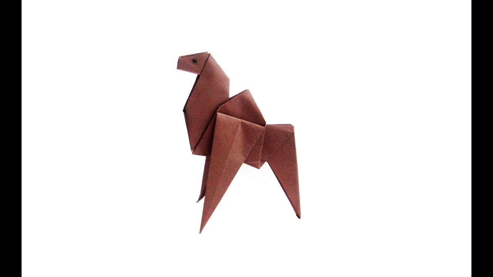
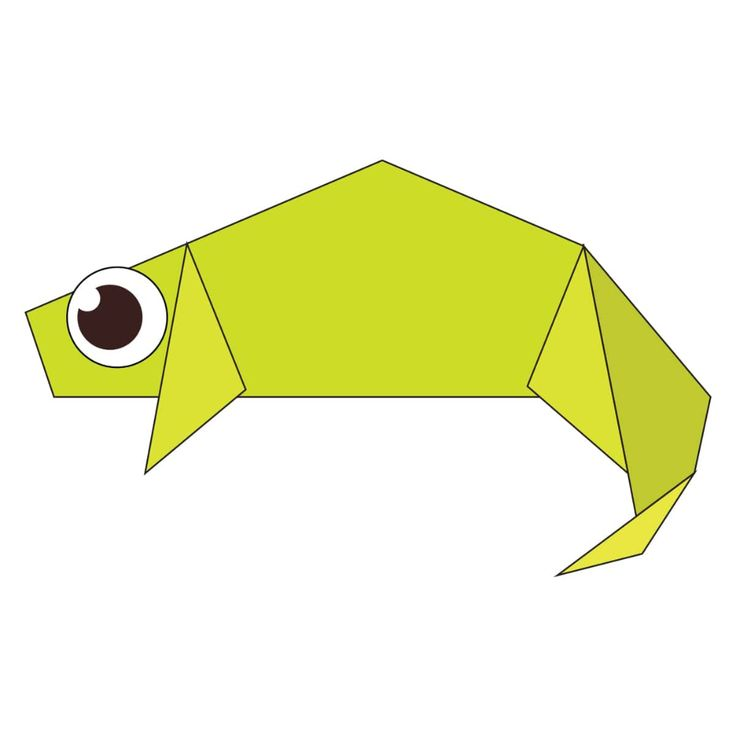

Origami Designs
About us
Follow us

Interesting Facts about camel
- Camel's ears are furry
- Camel can move easily across the sand because of its specially desingned feet
- When they find water,they drink as much as possible

Interesting Facts about chameleon
- Chameleons are reptiles that are the part of the iguana subborder
- Changing skin colors is an important part of communication among Chameleons
- Most chameleons have a prehensile tail that they use to wrap around tree branches